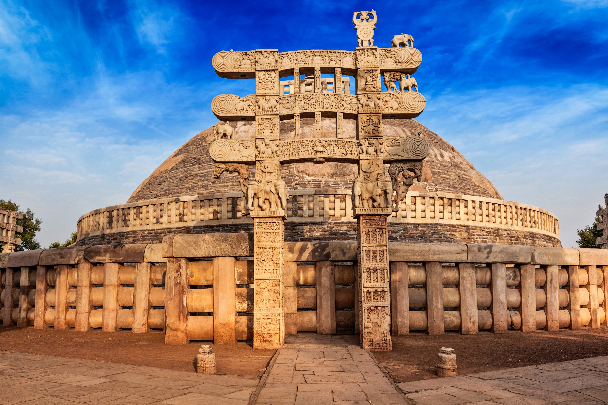
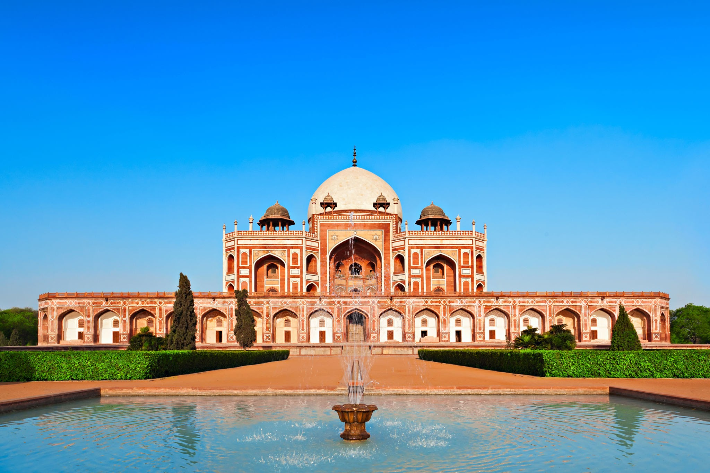
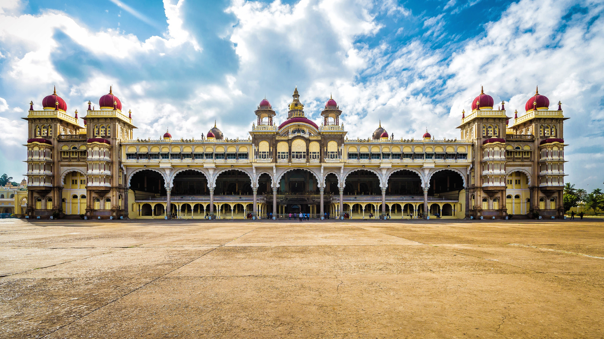
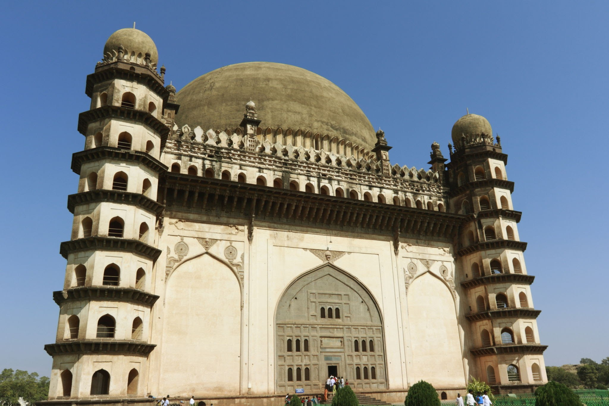
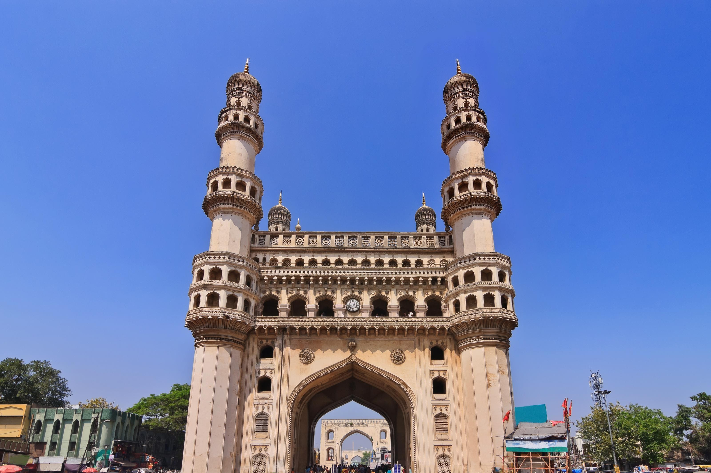

Gwalior fortGwalior
The Gwalior Fort commonly known as the Gwāliiyar Qila, is a hill
fort near Gwalior, Madhya Pradesh, India. The fort has existed at least since
the 10th century, and the inscriptions and monuments found within what is now
the fort campus indicate that it may have existed as early as the beginning of
the 6th century.
Sanchi stupaMadhya pradesh
Sanchi stupaMadhya pradesh
Sanchi is a Buddhist complex, famous for its Great Stupa, on
a hilltop at Sanchi Town in Raisen District of the State of Madhya Pradesh,
India. It is located, about 23 kilometres from Raisen town, district
headquarter and 46 kilometres north-east of Bhopal, capital of Madhya
Pradesh

Red FortDelhi
The Red Fort or Lal Qila is a historic fort in Old Delhi, Delhi in
India that served as the main residence of the Mughal Emperors. Emperor Shah
Jahan commissioned construction of the Red Fort on 12 May 1638, when he
decided to shift his capital from Agra to Delhi

Qutub MinarDelhi
The Qutb Minar, also spelled Qutub Minar and Qutab Minar, is a
minaret and "victory tower" that forms part of the Qutb complex, which lies at
the site of Delhi’s oldest fortified city, Lal Kot, founded by the Tomar
Rajputs
Humayun TombDelhi
Humayun TombDelhi
Humayun's tomb is the tomb of the Mughal Emperor Humayun in Delhi,
India. The tomb was commissioned by Humayun's chief consort, Empress Hamida
Banu Begum, on patronage of her son Akbar, in 1558, and designed by Mirak
Mirza Ghiyas and his son, Sayyid Muhammad, Persian architects chosen by her.

konark templeOdisa
Konark Sun Temple is a 13th-century CE Sun temple at Konark about 35
kilometres northeast from Puri city on the coastline in Puri district, Odisha,
India. The temple is attributed to king Narasimhadeva I of the Eastern Ganga
dynasty about 1250 CE.
mysore palaceKarnatak
mysore palaceKarnatak
The Mysore Palace, also known as Amba Vilas Palace, is a
historical palace and a royal residence. It is located in Mysore, Karnataka.
It used to be the official residence of the Wadiyar dynasty and the seat of
the Kingdom of Mysore. The palace is in the centre of Mysore, and faces the
Chamundi Hills eastward
GolgumbazKarnatak
GolgumbazKarnatak
Gol Gumbaz is the most famous monument in Vijayapura. It is the
tomb of Mohammed Adil Shah (ruled 1627–1657). It is the second largest dome
ever built, next in size only to St Peter's Basilica in Rome. A particular
attraction in this monument is the central chamber, where every sound is
echoed seven times.

Golden
temple_Amritsar
The Golden temple is famous for its full golden dome, it is
one of the most sacred pilgrim spots for Sikhs. The Mandir is built on a 67-ft
square of marble and is a two storied structure. Maharaja Ranjit Singh had the
upper half of the building built with approximately 400 kg of gold
leaf.
Char minarHydrabad
Char minarHydrabad
The Charminar ( lit. 'four minarets') constructed in 1591, is a
monument located in Hyderabad, Telangana, India. The landmark has become known
globally as a symbol of Hyderabad and is listed among the most recognised
structures in India.

Taj MahalAgra
Taj Mahal is an Islamic ivory-white marble mausoleum on the right bank
of the river Yamuna in the Indian city of Agra. It was commissioned in 1632 by
the Mughal emperor Shah Jahan (r. 1628–1658) to house the tomb of his
favourite wife, Mumtaz Mahal; it also houses the tomb of Shah Jahan
himself